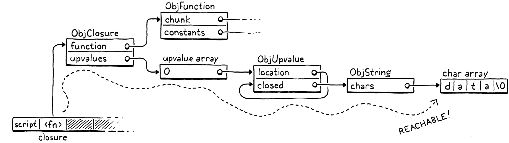
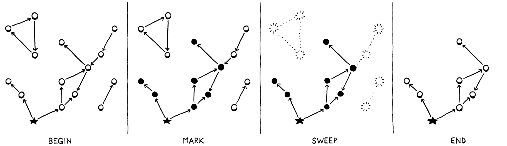
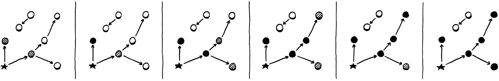
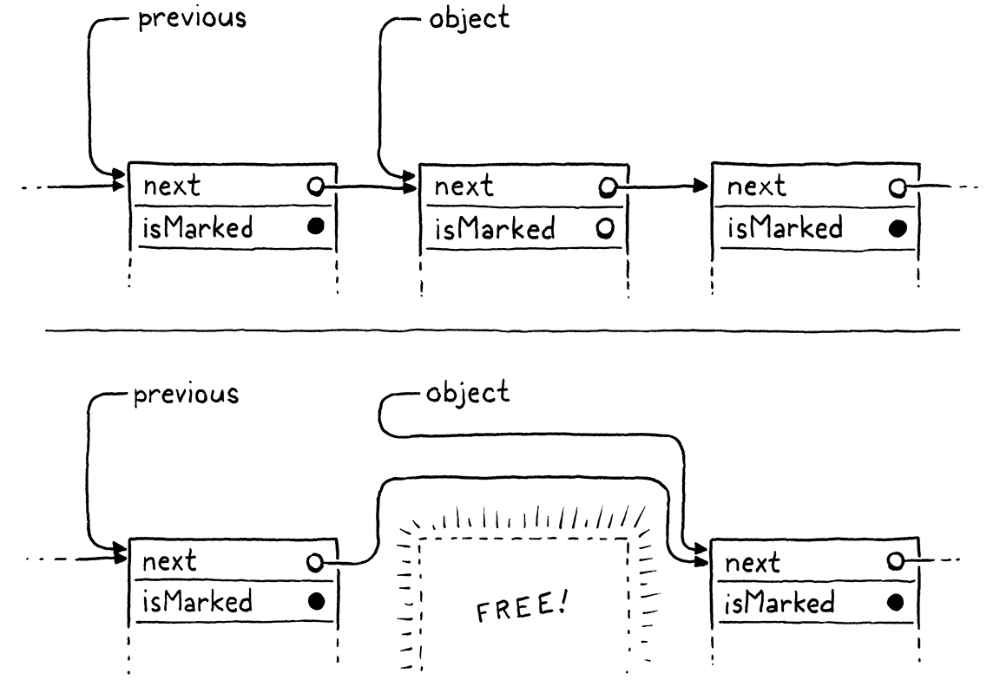
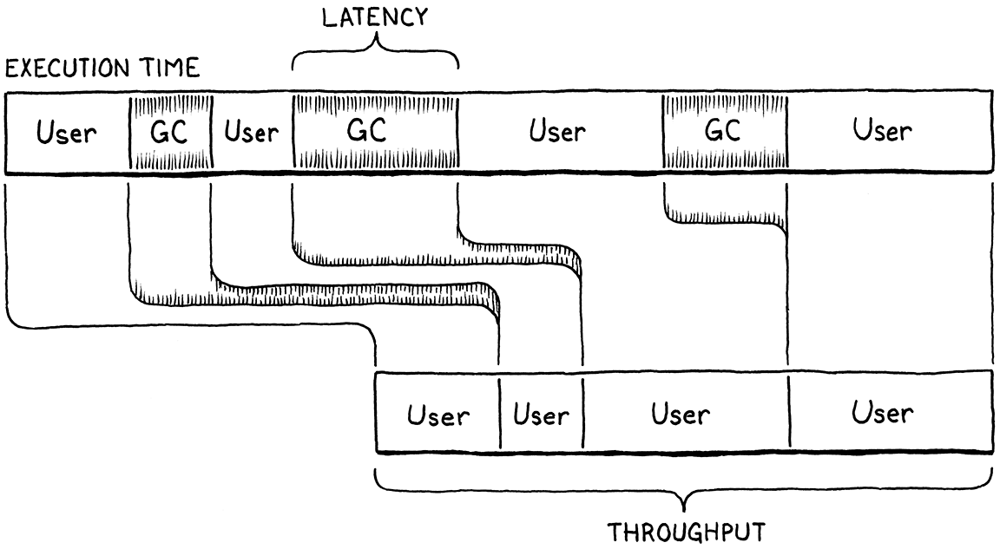

垃圾回收
I wanna, I wanna, I wanna, I wanna, I wanna be trash.
—— The Whip, “Trash”
【译者注：The Whip 乐队的歌曲，歌词也没必要翻译了】
我们说 Lox 是门「高层」语言，是因为它把程序员从那些与所解决问题无关的细节里解放出来。 用户成了一名管理者，给机器下达抽象的目标，让低贱的计算机自己去想办法怎么达成。
动态内存分配是自动化的绝佳候选。它是程序能跑起来的必要条件，手工去做既乏味又容易出错。 那些难免会犯的错误可能是灾难性的，导致崩溃、内存损坏或者安全漏洞。这正是那种机器比人 更擅长的活儿：风险与无聊并存。
这就是为什么 Lox 是一门托管语言——意思是语言实现替用户管理内存的分配与释放。当用户 执行一个需要动态内存的操作时，VM 自动分配。程序员从不需要操心释放任何东西。机器保证程序 用到的任何内存都会在需要的时间内一直存在。
Lox 营造出一种「计算机拥有无限内存」的幻觉。用户可以分配、分配、再分配，一次都不用想这些 字节是从哪来的。当然，计算机还没有真正拥有无限内存。所以托管语言维持这个幻觉的办法， 就是背着程序员把程序已经不需要的内存收回来。做这件事的组件叫垃圾回收器。
26 . 1可达性
这引出了一个出奇困难的问题：VM 怎么知道哪些内存是不需要的？只有将来还会被读取的内存才是 需要的，但除非有台时光机，实现怎么可能知道程序将会执行哪些代码、将会使用哪些数据？ 剧透一下：VM 不能穿越到未来。于是语言只能做一个保守的近似：如果一块内存有可能在将来 被读取，就认为它仍在使用中。
这听起来太保守了。难道任何一块内存都有可能被读取吗？其实不然，至少在 Lox 这样的内存 安全语言里不会。举个例子：
var a = "first value"; a = "updated"; // GC here. print a;
假设我们在第二行的赋值完成之后运行 GC。字符串 “first value” 仍然待在内存里，但用户的程序
已经没有任何办法够到它了。a 一被重新赋值，程序就失去了对那个字符串的任何引用。我们可以
安全地释放它。如果存在某种途径让用户程序引用到一个值，这个值就是可达的；否则，就像这里
的字符串 “first value” 那样，它是不可达的。
VM 可以直接访问很多值。看看这个：
var global = "string"; { var local = "another"; print global + local; }
在两个字符串刚拼好、print 语句还没执行的时候把程序暂停。VM 可以穿过全局变量表找到
global 对应的条目，从而到达 "string"。它可以遍历值栈、命中局部变量 local 所在的槽位，
从而找到 "another"。它甚至能找到拼接出来的字符串 "stringanother"，因为在我们暂停程序的
那一刻，这个临时值也还待在 VM 的栈上。
所有这些值都叫根。根是指 VM 不必经过其他对象里的引用就能直接到达的任何对象。大多数根 是全局变量或在栈上，但正如我们后面会看到的，VM 还在另外几个地方存了它能找到的对象引用。
还有一些值要通过另一个值里的引用才能找到。类实例上的字段是最明显 的情况，但我们还没有它们。即便没有这些，我们的 VM 仍然有间接引用。考虑：
fun makeClosure() { var a = "data"; fun f() { print a; } return f; } { var closure = makeClosure(); // GC here. closure(); }
假设我们在标记行上暂停程序并运行垃圾回收器。当回收器做完、程序恢复执行时，它会调用那个
闭包，闭包进而打印 "data"。所以回收器需要不释放那个字符串。可我们暂停程序时栈的样子是：
"data" 根本不在栈上。它已经被搬离栈，移进了闭包使用的那个已关闭的 upvalue 里。闭包本身
在栈上。但要够到那个字符串，我们得穿过闭包和它的 upvalue 数组。既然用户的程序确实可以
这么做，那么所有这些间接可达的对象也同样被认为是可达的。

这就给了我们一个关于可达性的归纳定义：
-
所有根都是可达的。
-
从一个可达对象引用到的任何对象，它自身也是可达的。
这些就是仍然「活着」、需要留在内存里的值。任何不满足这个定义的值，都任凭回收器收割。 这一对互相递归的规则，暗示着我们可以用一个递归算法来释放不需要的内存：
-
从根出发，沿着对象引用遍历，找出全部可达对象的集合。
-
释放所有不在这个集合里的对象。
如今有各种各样的垃圾回收算法在用，但它们大致都遵循同样的结构。 有些可能会把两个步骤交错或混合，但那两个基本操作都在。它们主要区别在于如何执行每一步。
26 . 2标记-清除垃圾回收
第一款托管语言是 Lisp，它是继 Fortran 之后发明的第二门「高层」语言。约翰·麦卡锡（John McCarthy）考虑过用手工内存管理或引用计数，但最终选择了 （并命名了）垃圾回收——程序一旦内存告急，就回头去找回那些没在用的存储空间。
他设计出了第一个、也是最简单的垃圾回收算法，叫做 mark-and-sweep，或者简称 mark-sweep。关于它的描述，在最初那篇 Lisp 论文里只占三个短段落。尽管它又老又简单， 同样的基本算法却支撑着许多现代内存管理器。CS 的某些角落似乎是不受时间影响的。
正如名字所暗示的，标记-清除分两个阶段：
-
标记： 我们从根出发，遍历或追踪这些根所引用的所有对象。 这是一次对全部可达对象的经典图遍历。每当我们访问一个对象，就以某种方式把它标记起来。 （不同实现在如何记录这个标记上各有差异。）
-
清除： 标记阶段一结束，堆里每个可达对象都已被标记。这意味着任何未被标记的对象都是 不可达的，正等着被回收。我们遍历所有未标记的对象，把每一个都释放掉。
看起来大致是这样：

这就是我们要实现的东西。每当我们决定是时候回收一些字节了，我们就追踪一切、标记所有可达 对象、释放没被标记的那些，然后恢复用户的程序。
26 . 2 . 1收集垃圾
整章讲的就是实现这一个函数：
void* reallocate(void* pointer, size_t oldSize, size_t newSize);
加在 reallocate() 之后
void collectGarbage();
void freeObjects();
我们从这个空壳开始，一步步做到完整实现：
加在 freeObject() 之后
void collectGarbage() { }
你可能会问的第一个问题是：这个函数什么时候被调用？事实证明这是个微妙的问题，本章后面我们会 花些时间讨论。现在我们先绕开它，顺手给自己造一个顺手的诊断工具。
#define DEBUG_TRACE_EXECUTION
#define DEBUG_STRESS_GC
#define UINT8_COUNT (UINT8_MAX + 1)
我们给垃圾回收器加一个可选的「压力测试」模式。这个标志一旦定义，GC 就会尽可能频繁地运行。 这显然对性能是灾难性的。但它非常适合把那些只有在 GC 恰好在某个时刻被触发时才会出现的内存 管理 bug 给冲出来。如果每个时刻都触发一次 GC，你多半能把那些 bug 找出来。
void* reallocate(void* pointer, size_t oldSize, size_t newSize) {
在 reallocate() 内
if (newSize > oldSize) { #ifdef DEBUG_STRESS_GC collectGarbage(); #endif }
if (newSize == 0) {
每当我们调用 reallocate() 去获取更多内存时，我们都强制跑一次回收。那个 if 检查是因为
reallocate() 也会被用来释放或收缩一块已分配的内存。我们不想为那种事触发 GC——尤其是因为
GC 自己也会调用 reallocate() 来释放内存。
紧挨着分配之前做回收，是把 GC 接进 VM 的经典做法。你本来就在调用 内存管理器，那是个很容易挂钩子的地方。另外，分配是你真正需要腾出一些已释放内存来复用的 唯一时刻。如果不用分配来触发 GC，就得确保代码里每一个可能循环并分配内存的地方都另有 办法触发回收器。否则 VM 会陷入一种饥饿状态：它需要更多内存，却从不回收。
26 . 2 . 2调试日志
既然说到诊断，我们再加一些。我在垃圾回收器上遇到的一个真实难题是它们太不透明。到目前为止 我们跑大量 Lox 程序一直好好的，压根没有 GC。加上了之后，我们怎么知道它有没有在干有用的 事？是不是只有写那种挥霍掉成片内存的程序才能看出来？又该怎么调试？
照亮 GC 的内部运作，一个简单的办法是加些日志。
#define DEBUG_STRESS_GC
#define DEBUG_LOG_GC
#define UINT8_COUNT (UINT8_MAX + 1)
打开之后，clox 在对动态内存做操作时会往控制台打印信息。
我们需要几个 include。
#include "vm.h"
#ifdef DEBUG_LOG_GC #include <stdio.h> #include "debug.h" #endif
void* reallocate(void* pointer, size_t oldSize, size_t newSize) {
我们还没有回收器，但可以先开始塞一些日志进去。我们会想知道一次回收是什么时候开始的。
void collectGarbage() {
在 collectGarbage() 内
#ifdef DEBUG_LOG_GC printf("-- gc begin\n"); #endif
}
最终我们还会在回收过程中记录其他操作，所以也得知道什么时候一切结束。
printf("-- gc begin\n");
#endif
在 collectGarbage() 内
#ifdef DEBUG_LOG_GC printf("-- gc end\n"); #endif
}
我们还没有回收器的代码，但已经有了分配和释放的函数，所以现在就能给它们装上仪表。
vm.objects = object;
在 allocateObject() 内
#ifdef DEBUG_LOG_GC printf("%p allocate %zu for %d\n", (void*)object, size, type); #endif
return object;
以及在对象生命周期的末尾：
static void freeObject(Obj* object) {
在 freeObject() 内
#ifdef DEBUG_LOG_GC printf("%p free type %d\n", (void*)object, object->type); #endif
switch (object->type) {
有了这两个标志，我们在推进本章剩余部分时应该能看出进展。
26 . 3标记根
对象像夜空里繁星一样散落在堆上。一个对象到另一个对象的引用形成一条连线，而这些星座就是 标记阶段要遍历的图。标记从根开始。
#ifdef DEBUG_LOG_GC
printf("-- gc begin\n");
#endif
在 collectGarbage() 内
markRoots();
#ifdef DEBUG_LOG_GC
大多数根是待在 VM 栈里的局部变量或临时值，所以我们先遍历栈。
加在 freeObject() 之后
static void markRoots() { for (Value* slot = vm.stack; slot < vm.stackTop; slot++) { markValue(*slot); } }
要标记一个 Lox 值，我们用这个新函数：
void* reallocate(void* pointer, size_t oldSize, size_t newSize);
加在 reallocate() 之后
void markValue(Value value);
void collectGarbage();
它的实现在这里：
加在 reallocate() 之后
void markValue(Value value) { if (IS_OBJ(value)) markObject(AS_OBJ(value)); }
有些 Lox 值——数字、布尔值和 nil——是直接内联存在 Value 里的，不需要堆分配。垃圾回收器
完全不用为它们操心，所以我们首先确保这个值确实是一个堆对象。如果是，真正的工作就在这个函数里：
void* reallocate(void* pointer, size_t oldSize, size_t newSize);
加在 reallocate() 之后
void markObject(Obj* object);
void markValue(Value value);
它定义在这里：
加在 reallocate() 之后
void markObject(Obj* object) { if (object == NULL) return; object->isMarked = true; }
从 markValue() 调用过来时，那个 NULL 检查是多余的。任何属于某种 Obj 类型的 Lox Value
都会带一个有效指针。但以后我们会从别处直接调用这个函数，而在其中一些地方，被指向的对象是
可选的。
假定我们确实有一个有效对象，我们通过设置一个标志来标记它。这个新字段位于所有对象共享的 Obj 头部结构里。
ObjType type;
在结构体 Obj 内
bool isMarked;
struct Obj* next;
每个新对象生来都是未标记的，因为我们还没判定它到底可达还是不可达。
object->type = type;
在 allocateObject() 内
object->isMarked = false;
object->next = vm.objects;
在继续往前之前，先给 markObject() 加些日志。
void markObject(Obj* object) {
if (object == NULL) return;
在 markObject() 内
#ifdef DEBUG_LOG_GC printf("%p mark ", (void*)object); printValue(OBJ_VAL(object)); printf("\n"); #endif
object->isMarked = true;
这样我们就能看到标记阶段在做什么。标记栈处理掉了局部变量和临时值。根的另一个主要来源是 全局变量。
markValue(*slot); }
在 markRoots() 内
markTable(&vm.globals);
}
它们住在 VM 拥有的一张哈希表里，所以我们再声明一个辅助函数，用来标记一张表里的所有对象。
ObjString* tableFindString(Table* table, const char* chars,
int length, uint32_t hash);
加在 tableFindString() 之后
void markTable(Table* table);
#endif
我们在「table」模块里这样实现：
加在 tableFindString() 之后
void markTable(Table* table) { for (int i = 0; i < table->capacity; i++) { Entry* entry = &table->entries[i]; markObject((Obj*)entry->key); markValue(entry->value); } }
相当直白。我们遍历条目数组。对每一条，我们标记它的值。因为那些字符串也由 GC 管理，我们还 要标记每个条目的键字符串。
26 . 3 . 1不那么明显的根
这些覆盖了我们通常会想到的根——那些因为存在用户程序可见的变量里而显然可达的值。但 VM 自己 还有几个藏私的地方，偷偷藏着它直接访问的那些值的引用。
大部分函数调用状态住在值栈里，但 VM 还维护着一个独立的 CallFrame 栈。每个 CallFrame 都含有 一个指向被调用闭包的指针。VM 用这些指针去访问常量和 upvalue，所以那些闭包也得留着。
}
在 markRoots() 内
for (int i = 0; i < vm.frameCount; i++) { markObject((Obj*)vm.frames[i].closure); }
markTable(&vm.globals);
说到 upvalue，open upvalue 列表是另一组 VM 可以直接够到的值。
for (int i = 0; i < vm.frameCount; i++) {
markObject((Obj*)vm.frames[i].closure);
}
在 markRoots() 内
for (ObjUpvalue* upvalue = vm.openUpvalues; upvalue != NULL; upvalue = upvalue->next) { markObject((Obj*)upvalue); }
markTable(&vm.globals);
还要记住，一次回收可能在任何一次分配期间开始。这些分配并不只在用户程序运行时发生。编译器 本身也会周期性地从堆上抓内存，用来放字面量和常量表。如果 GC 在我们编译到一半时跑起来，那么 编译器直接访问的那些值也得当作根来对待。
为了保持编译器模块与 VM 其余部分干净地分离，我们把这件事放进一个单独的函数。
markTable(&vm.globals);
在 markRoots() 内
markCompilerRoots();
}
它声明在这里：
ObjFunction* compile(const char* source);
加在 compile() 之后
void markCompilerRoots();
#endif
这意味着「memory」模块需要一个 include。
#include <stdlib.h>
#include "compiler.h"
#include "memory.h"
定义则在「compiler」模块那边。
加在 compile() 之后
void markCompilerRoots() { Compiler* compiler = current; while (compiler != NULL) { markObject((Obj*)compiler->function); compiler = compiler->enclosing; } }
幸运的是，编译器攥着的值并不多。它唯一用到的对象就是它正在编译进去的那个 ObjFunction。由于 函数声明可以嵌套，编译器有一个由这些 ObjFunction 组成的链表，我们遍历整个列表。
因为是「compiler」模块在调用 markObject()，它也需要一个 include。
#include "compiler.h"
#include "memory.h"
#include "scanner.h"
根就这些。跑完这一遍，VM——运行时和编译器——所有不必经过其他对象就能到达的对象， 它们的标记位都被设上了。
26 . 4追踪对象引用
标记过程的下一步，是沿着对象之间的引用图追踪，找出间接可达的值。我们还没有带字段的实例， 所以含引用的对象不多，但我们确实有一些。具体来说，ObjClosure 既 有它闭包捕获的 ObjUpvalue 列表，也有对它所包装的原始 ObjFunction 的引用。而 ObjFunction 本身又有一张常量表，里面装着函数体里创建的所有字面量的引用。对我们的回收器来说，这已经足够 织出一张相当复杂的对象之网去爬了。
现在是实现这个遍历的时候了。我们可以广度优先、深度优先，或者用别的顺序。既然我们只需要找出 全部可达对象的集合，访问它们的顺序大多无关紧要。
26 . 4 . 1三色抽象
当回收器在对象图里游走时，我们得确保它不会跟丢自己的位置，也不会绕圈子困住。这对增量式 GC 这类高级实现尤其要紧——它们会把标记与用户程序的部分执行交错起来。回收器必须能够暂停， 并在之后从停下的地方接着做。
为了帮我们这些脑子不太够用的人推理这个复杂过程，VM 黑客们想出了一个叫做 三色抽象 的比喻。 每个对象都有一个概念上的「颜色」，用来跟踪对象处于什么状态、还剩什么工作要做。
-
白色： 在垃圾回收开始时，每个对象都是白色。这个颜色表示我们根本还没 到达或处理过这个对象。
-
灰色： 在标记过程中，我们第一次到达某个对象时，把它染成灰色。这个颜色 表示我们知道该对象本身是可达的、不应被回收。但我们还没有穿过它去看它引用了哪些其他 对象。用图算法的术语说，这就是待处理列表——我们已经知道但还没处理的那批对象。
-
黑色： 当我们拿走一个灰色对象并标记了它引用的所有对象之后，就把这个灰色 对象转成黑色。这个颜色表示标记阶段处理完了那个对象。
用这套抽象来说，标记过程现在长这样：
-
一开始让所有对象都是白色。
-
找出所有根，把它们标成灰色。
-
只要还有灰色对象就重复：
-
挑一个灰色对象。把它提到的任何白色对象转成灰色。
-
把原来那个灰色对象标成黑色。
-
我发现这样想有助于理解。你有一张对象之间带引用的网。起初它们都是些白色小点。旁边有一些从 VM 进来的边指向那些根。那些根变成灰色。然后每个灰色对象的同胞变成灰色，而它自己变成黑色。 最终的效果是一道灰色波前扫过整张图，身后留下一片可达的黑色对象。不可达的对象波前碰都不碰， 一直是白色。

到最后，你剩下的是一片被触及的黑色对象海洋，其中散布着一座座 白色对象的小岛，可以被扫走并释放掉。一旦不可达的对象被释放，剩下的对象——全是黑色的——会 被重置为白色，进入下一个垃圾回收周期。
26 . 4 . 2给灰色对象做一个待处理列表
在我们的实现里，根已经被标记过了。它们全都是灰色的。下一步是开始挑出它们、遍历它们的引用。 但我们没有方便的办法把它们找出来。我们只是在对象上设了一个字段，仅此而已。我们不想非得 遍历整个对象列表去找那些设了这个字段的对象。
所以我们另外建一个待处理列表，来跟踪所有灰色对象。当一个对象变成灰色时，除了设置标记字段， 我们还把它加进待处理列表。
object->isMarked = true;
在 markObject() 内
if (vm.grayCapacity < vm.grayCount + 1) { vm.grayCapacity = GROW_CAPACITY(vm.grayCapacity); vm.grayStack = (Obj**)realloc(vm.grayStack, sizeof(Obj*) * vm.grayCapacity); } vm.grayStack[vm.grayCount++] = object;
}
任何一种便于放入和取出的数据结构都可以。我选了栈，因为在 C 里用动态数组实现它最简单。它的
工作方式跟我们在 Lox 里建过的其他动态数组差不多，不过要注意，它调用的是系统的 realloc()
函数，而不是我们自己的 reallocate() 包装器。灰栈自身的内存不由垃圾回收器管理。我们不想
因为在 GC 期间扩大灰栈而让 GC 递归地启动一次新的 GC。那可能把时空连续体撕开一个口子。
我们自己显式地管理它的内存。灰栈归 VM 所有。
Obj* objects;
在结构体 VM 内
int grayCount; int grayCapacity; Obj** grayStack;
} VM;
它一开始是空的。
vm.objects = NULL;
在 initVM() 内
vm.grayCount = 0; vm.grayCapacity = 0; vm.grayStack = NULL;
initTable(&vm.globals);
VM 关闭时我们还得释放它。
object = next; }
在 freeObjects() 内
free(vm.grayStack);
}
我们全权负责这个数组。这也包括分配失败的情况。如果我们没法创建或扩大灰栈，那就没法完成 这次垃圾回收。对 VM 来说这是坏消息，不过幸好很少见，因为灰栈通常挺小的。能有更优雅的处理当然 更好，但为了保持本书代码简单，我们就是直接中止。
vm.grayStack = (Obj**)realloc(vm.grayStack,
sizeof(Obj*) * vm.grayCapacity);
在 markObject() 内
if (vm.grayStack == NULL) exit(1);
}
26 . 4 . 3处理灰色对象
好，现在标记完根之后，我们既设了一批字段，也把工作列表填满了等着啃的对象。是时候进入下一个 阶段了。
markRoots();
在 collectGarbage() 内
traceReferences();
#ifdef DEBUG_LOG_GC
实现在这里：
加在 markRoots() 之后
static void traceReferences() { while (vm.grayCount > 0) { Obj* object = vm.grayStack[--vm.grayCount]; blackenObject(object); } }
它跟前面那段文字算法几乎一模一样。在栈被掏空之前，我们不断取出灰色对象、遍历它们的引用， 然后把它们标成黑色。遍历一个对象的引用可能翻出一些新的白色对象，它们被标成灰色并加进栈。 所以这个函数在「把白色对象变灰」和「把灰色对象变黑」之间来回摆动，逐步把整道波前往前推。
这里是遍历单个对象引用的地方：
加在 markValue() 之后
static void blackenObject(Obj* object) { switch (object->type) { case OBJ_NATIVE: case OBJ_STRING: break; } }
每种对象类型有不同的、可能引用其他对象的字段，所以每种类型都需要 专门的一大段代码。我们从容易的开始——字符串和原生函数对象不含任何对外引用，没什么可遍历的。
注意我们并没有在被遍历的对象自身上设置任何状态。对象的状态里没有对「黑色」的直接编码。
一个黑色对象就是任何 isMarked 字段被设置、且已经不在灰栈里的对象。
现在我们开始把其他对象类型加进来。最简单的是 upvalue。
static void blackenObject(Obj* object) {
switch (object->type) {
在 blackenObject() 内
case OBJ_UPVALUE: markValue(((ObjUpvalue*)object)->closed); break;
case OBJ_NATIVE:
当一个 upvalue 被关闭时，它含有一个指向被捕获值的引用。既然那个值已经不在栈上了，我们就得 确保从 upvalue 出发追踪这个引用。
接下来是函数。
switch (object->type) {
在 blackenObject() 内
case OBJ_FUNCTION: { ObjFunction* function = (ObjFunction*)object; markObject((Obj*)function->name); markArray(&function->chunk.constants); break; }
case OBJ_UPVALUE:
每个函数都有一个指向 ObjString 的引用，那个字符串装着函数名。更重要的是，函数有一张塞满 其他对象引用的常量表。我们用这个辅助函数追踪它们：
加在 markValue() 之后
static void markArray(ValueArray* array) { for (int i = 0; i < array->count; i++) { markValue(array->values[i]); } }
我们目前最后一种对象类型——后面几章还会加更多——是闭包。
switch (object->type) {
在 blackenObject() 内
case OBJ_CLOSURE: { ObjClosure* closure = (ObjClosure*)object; markObject((Obj*)closure->function); for (int i = 0; i < closure->upvalueCount; i++) { markObject((Obj*)closure->upvalues[i]); } break; }
case OBJ_FUNCTION: {
每个闭包都有一个指向它所包装的裸函数的引用，以及一个指向它所捕获的各个 upvalue 的指针数组。 我们把这些全都追踪一遍。
这就是处理一个灰色对象的基本机制，但还有两个尾巴要收。第一，加些日志。
static void blackenObject(Obj* object) {
在 blackenObject() 内
#ifdef DEBUG_LOG_GC printf("%p blacken ", (void*)object); printValue(OBJ_VAL(object)); printf("\n"); #endif
switch (object->type) {
这样我们就能看着追踪在对象图里一层层渗透。说到这个，注意我说的是图。对象之间的引用是 有向的，但这并不意味着它们是**无环的！**完全可能出现对象构成的环。那种情况下我们得确保回收器 不会陷入死循环，因为它会不断把同一批对象重新加进灰栈。
修法很简单。
if (object == NULL) return;
在 markObject() 内
if (object->isMarked) return;
#ifdef DEBUG_LOG_GC
如果对象已经被标记过，我们就不再标记它，也就不把它加进灰栈。这确保了一个已经变灰的对象不会被 重复添加，也确保一个黑色对象不会被不知不觉地变回灰色。换句话说，它让波前只穿过白色对象继续 往前推进。
26 . 5清除未使用的对象
当 traceReferences() 里的循环退出时，我们已经处理完了所有够得着的对象。灰栈空了，堆里每个
对象要么是黑色要么是白色。黑色对象是可达的，我们想留着它们。任何仍然是白色的对象从没被追踪
碰到，因此就是垃圾。剩下的就是回收它们。
traceReferences();
在 collectGarbage() 内
sweep();
#ifdef DEBUG_LOG_GC
所有逻辑都在一个函数里。
加在 traceReferences() 之后
static void sweep() { Obj* previous = NULL; Obj* object = vm.objects; while (object != NULL) { if (object->isMarked) { previous = object; object = object->next; } else { Obj* unreached = object; object = object->next; if (previous != NULL) { previous->next = object; } else { vm.objects = object; } freeObject(unreached); } } }
我知道那算是相当多的代码和指针花招，但一旦你把它想通，其实没什么。外层 while 循环遍历堆里
每个对象组成的链表，检查它们的标记位。如果对象被标记了（黑色），我们就跳过它继续往下。如果
它没被标记（白色），我们把它从链表里摘下来，用我们之前写的 freeObject() 函数释放。

这里其余大部分代码都在应付「从单链表里删节点很麻烦」这件事。我们必须一直记住前一个节点， 才能摘掉它的 next 指针，还得处理「我们正在释放第一个节点」这个边界情况。不过除此之外就相当 简单了——把链表里所有没设标记位的节点删掉。
还有一点小补充：
if (object->isMarked) {
在 sweep() 内
object->isMarked = false;
previous = object;
sweep() 完成后，剩下唯一还在的就是那些标记位设着的活着的黑色对象。这没问题，但当下一个
回收周期开始时，我们需要每个对象都是白色。所以每当我们遇到一个黑色对象，就顺手把那个位清掉，
以备下一次。
26 . 5 . 1弱引用与字符串池
我们的回收工作几乎完成了。VM 里还剩一个角落对内存有着不寻常的要求。回想一下，我们给 clox 加字符串时让 VM 把它们全部驻留。这意味着 VM 有一张哈希表，里面装着指向堆里每一个字符串的 指针。VM 用它来给字符串去重。
在标记阶段，我们刻意没有把 VM 的字符串表当成根的来源。要是我们那么做了，就永远不会有任何字符串被回收。字符串表会一直长大，一个字节都不还给操作系统。那会很糟。
与此同时，如果我们确实让 GC 释放字符串，那么 VM 的字符串表里就会留下一堆指向已释放内存的 悬垂指针。那会更糟。
字符串表很特殊，需要特殊支持。特别地，它需要一种特殊的引用。这张表应该能够引用一个字符串， 但这条链接在判定可达性时不该被当作根。这意味着被引用的对象是可以被释放的。那种情况下这个悬垂 引用也必须一并修好，有点像一个会自我清除的魔法指针。这一套语义出现得足够频繁，以至于它有了 名字：弱引用。
我们已经隐式实现了字符串表那套独特行为的一半——因为我们在标记时不遍历它。这意味着它不会 强迫字符串保持可达。剩下的一半是清掉那些已被释放字符串的所有悬垂指针。
要移除对不可达字符串的引用，我们得知道哪些字符串是不可达的。而这要到标记阶段结束才知道。 但我们又不能等到清除阶段做完，因为那时对象——以及它们的标记位——都已经不存在、没法检查了。 所以正确的时机恰好是标记与清除两个阶段之间。
traceReferences();
在 collectGarbage() 内
tableRemoveWhite(&vm.strings);
sweep();
删除即将被清除的字符串，这个逻辑实现在「table」模块的一个新函数里。
ObjString* tableFindString(Table* table, const char* chars,
int length, uint32_t hash);
加在 tableFindString() 之后
void tableRemoveWhite(Table* table);
void markTable(Table* table);
实现在这里：
加在 tableFindString() 之后
void tableRemoveWhite(Table* table) { for (int i = 0; i < table->capacity; i++) { Entry* entry = &table->entries[i]; if (entry->key != NULL && !entry->key->obj.isMarked) { tableDelete(table, entry->key); } } }
我们遍历表里每一个条目。字符串驻留表只用每个条目的键——它基本上是一张哈希集合而不是哈希 映射。如果键字符串对象的标记位没有设上，那它就是一个离被扫走只差一步的白对象。我们先把它 从哈希表里删掉，从而确保不会看到任何悬垂指针。
26 . 6何时回收
我们现在有了一个功能完整的标记-清除垃圾回收器。压力测试标志打开时，它老是被调用，再加上 日志也打开，我们就能看着它干活，确认它确实在回收内存。但压力测试标志一关，它就完全不运行。 是时候决定在正常的程序执行中该何时调用回收器了。
就我能分辨的而言，这个问题在文献里回答得很糟。垃圾回收器刚被发明出来那会儿，计算机只有很少 一点固定内存。早期的许多 GC 论文都假设你预留几千个字的内存——换句话说就是绝大部分——然后一 用完就叫回收器。简单。
现代机器有好几 G 的物理内存，藏在操作系统更大的虚拟内存抽象背后，而这块虚拟内存要和一大堆 其他程序共享，大家都在争抢自己那份。操作系统会允许你的程序想申请多少就申请多少，然后在物理 内存满了的时候从磁盘换页进出。你永远不会真正「用完」内存，你只是变得越来越慢。
26 . 6 . 1延迟与吞吐量
再等到「不得不」时才去跑 GC 已经没有意义了，所以我们需要一套更精细的时机策略。为了更精确地 推理这件事，是时候介绍衡量内存管理器性能时用到的两个基本数字了：吞吐量和延迟。
相比显式、由用户手写的释放，每一门托管语言都要付出性能代价。真正花在释放内存上的时间是 一样的，但 GC 还要花周期去弄清楚哪些内存该释放。那是没有花在跑用户代码、干有用工作上的 时间。在我们的实现里，那就是整个标记阶段。一个精巧的垃圾回收器的目标就是把这部分开销最小化。
有两个关键指标能帮我们更好地理解这份代价：
-
吞吐量 是花在跑用户代码上的时间占比，与花在垃圾回收工作上的时间之比。假设你跑一个 clox 程序十秒，其中有一秒花在
collectGarbage()里。那意味着吞吐量是 90%——90% 的时间在 跑程序，10% 花在 GC 开销上。吞吐量是最基本的度量，因为它跟踪了回收开销的总成本。其他条件相同时，你想要吞吐量最大化。 在本章之前，clox 压根没有 GC，因此吞吐量是 100%。这 难超越。当然，代价是用户的程序只要跑得够久，就有可能耗尽内存而崩溃。你可以看作 GC 的目标 就是修掉那个「小毛病」，同时尽可能少牺牲吞吐量。
-
延迟指用户程序被完全暂停、垃圾回收连续运行的最长时间。它衡量的是 回收器有多「成块」。延迟是完全不同于吞吐量的另一个指标。
考虑同一个 clox 程序的两次运行，都花十秒。第一次运行里 GC 启动了一次，在一次大动作里 实实在在地花了一秒在
collectGarbage()上。第二次运行里 GC 被调用了五次，每次五分之一秒。 花在回收上的总时间仍然是一秒，所以两种情况下吞吐量都是 90%。但第二次运行里，延迟只有 五分之一秒，比第一次小了五倍。
如果你喜欢类比，就想象你的程序是一家面包店，向顾客卖刚出炉的新鲜面包。吞吐量是你一天里能给 顾客端上的温热酥脆法棍的总数。延迟是最不走运的那位顾客在轮到被服务之前要排队等多久。
运行垃圾回收器，就像临时关掉面包店，把所有餐具都过一遍， 把脏的和干净的分开，然后洗掉用过的。在我们的类比里，我们没有专职洗碗工，所以这件事进行 期间没人烘焙。面包师在洗碗。
一天少卖面包是坏事，让任何一位顾客坐着等你去洗完全部餐具也是坏事。目标是最大化吞吐量、 最小化延迟，但即使在一家面包店里也没有免费的午餐。垃圾回收器在「牺牲多少吞吐量」和 「容忍多少延迟」之间做出不同的取舍。
能做这些取舍很有用，因为不同的用户程序有不同的需求。一个通宵跑的批处理作业，要从一 TB 的 数据里生成一份报告，它只需要尽可能快地多干活。吞吐量至高无上。与此同时，一个跑在用户手机上 的 app 需要对用户输入永远立刻响应，好让在屏幕上拖动顺滑得像黄油一样。这个 app 不能在 GC 拖着那堆脏活的那几秒里冻住。
作为垃圾回收器的作者，你可以通过选择回收算法来控制吞吐量与延迟之间的一部分取舍。但即便在 同一个算法内部，我们对回收器运行的频率也有很多控制权。
我们的回收器是一个全停顿式 GC，意思是用户程序会被 暂停，直到整个垃圾回收过程完成。如果我们隔很久才跑一次回收器，就会积累大量死对象。那会 导致回收器运行时出现一段很长的暂停，从而带来高延迟。所以，显然我们希望非常频繁地跑回收器。
但每次回收器运行时，它都要花些时间去访问活对象。那并不真的做任何有用的事（除了确保 它们不会被错误地删掉）。访问活对象的时间既是不释放内存的时间，也是不跑用户代码的时间。 如果你非常频繁地跑 GC，用户程序就来不及生成新垃圾给 VM 回收。VM 会把全部时间执拗地花在 一遍遍重访同一批活对象上，吞吐量就会受损。所以，显然我们希望真正不频繁地跑回收器。
事实上我们想要的是介于两者之间，而回收器运行的频率就是我们在延迟与吞吐量之间做取舍的 主要旋钮之一。
26 . 6 . 2自适应堆
我们希望 GC 运行得足够频繁以最小化延迟，又足够不频繁以维持不错的吞吐量。但当我们既不知道 用户程序需要多少内存、也不知道它多久分配一次时，怎么在这两者之间找到平衡？我们可以把这个问题 甩给用户，暴露 GC 调优参数逼他们自己选。很多 VM 就是这么做的。但如果我们这些 GC 作者都不 知道怎么调好，用户多半也不知道。他们应该得到一个合理的默认行为。
我跟你说实话，这不是我的专长。我跟若干职业 GC 黑客聊过——这是足以支撑起一整份职业的东西—— 也读了不少文献，而我得到的全部答案都是……含糊。最后挑的策略很常见、相当简单，而且（希望！） 对大多数用途来说够用。
思路是让回收频率根据堆的存活内存量自动调整。我们跟踪 VM 已分配的托管内存总字节数。当它超过 某个阈值时，就触发一次 GC。回收之后，我们记下还剩下多少字节内存——有多少没有被释放。然后 把阈值调整到比那个值更大的数。
结果是：随着存活内存增加，我们降低回收频率，以免因为重访不断增长的那堆活对象而牺牲吞吐量。 随着存活内存下降，我们提高回收频率，好让等待时间不至于太久而损失太多延迟。
实现需要在 VM 里加两个新的记账字段。
ObjUpvalue* openUpvalues;
在结构体 VM 内
size_t bytesAllocated; size_t nextGC;
Obj* objects;
第一个是 VM 已分配托管内存字节数的累计值。第二个是触发下一次回收的阈值。VM 启动时我们把它们 初始化好。
vm.objects = NULL;
在 initVM() 内
vm.bytesAllocated = 0; vm.nextGC = 1024 * 1024;
vm.grayCount = 0;
这里的初始阈值是任意的。它跟我们给各种动态数组挑的初始容量差不多。目标是既太快地触发 最初几次 GC，也不要等太久。如果我们有一些真实世界的 Lox 程序，就可以做性能剖析来调这个值。 但既然手上只有玩具程序，我就随便挑了个数。
每当我们分配或释放一些内存，就按那个差值调整计数器。
void* reallocate(void* pointer, size_t oldSize, size_t newSize) {
在 reallocate() 内
vm.bytesAllocated += newSize - oldSize;
if (newSize > oldSize) {
当总量越过上限时，我们就跑回收器。
collectGarbage(); #endif
在 reallocate() 内
if (vm.bytesAllocated > vm.nextGC) {
collectGarbage();
}
}
现在，终于，我们这个垃圾回收器在用户没打开隐藏诊断标志跑程序时也会真的干点事了。清除阶段
通过调用 reallocate() 来释放对象，这会降低 bytesAllocated 的值，所以回收一结束，我们
就知道还剩多少活着的字节。我们据此调整下一次 GC 的阈值。
sweep();
在 collectGarbage() 内
vm.nextGC = vm.bytesAllocated * GC_HEAP_GROW_FACTOR;
#ifdef DEBUG_LOG_GC
阈值是堆大小的一个倍数。这样一来，随着程序使用的内存增长，阈值就往外挪，以限制重访更大存活 集合所花的总时间。和本章里其他数字一样，这个缩放因子基本上是任意的。
#endif
#define GC_HEAP_GROW_FACTOR 2
void* reallocate(void* pointer, size_t oldSize, size_t newSize) {
等你的实现里有了真实程序可以拿来做基准时，你会想调调这个。现在我们至少可以把一些统计信息 记录下来。我们在回收之前捕获堆的大小。
printf("-- gc begin\n");
在 collectGarbage() 内
size_t before = vm.bytesAllocated;
#endif
然后在结束时把结果打印出来。
printf("-- gc end\n");
在 collectGarbage() 内
printf(" collected %zu bytes (from %zu to %zu) next at %zu\n", before - vm.bytesAllocated, before, vm.bytesAllocated, vm.nextGC);
#endif
这样我们就能看出垃圾回收器运行时干成了多少事。
26 . 7垃圾回收的 bug
理论上我们现在全都完成了。我们有了 GC。它周期性地启动、回收它能回收的，剩下的留下。要这是 一本典型教科书，我们就会掸掸手上的灰，沐浴在我们亲手造起的这座无瑕大理石建筑柔和的光辉里。
但我想教给你的不只是编程语言的理论，还有时而不适的真相。我要翻起一块腐烂的木头，让你看看 底下的臭虫，而垃圾回收器的 bug 确实是这世上最恶心的几种无脊椎动物之一。
回收器的职责是释放死对象、保住活对象。两个方向都很容易犯错。如果 VM 没能释放不需要的对象， 它就会慢慢泄漏内存。如果它释放了一个正在使用的对象，用户的程序就可能访问到非法内存。这些故障 往往不会立刻引发崩溃，这让我们很难倒溯时间去找到那个 bug。
更麻烦的是，我们不知道回收器什么时候会运行。任何最终会分配一些内存的调用，都是 VM 里一个 可能发生回收的地方。这就像抢椅子游戏。GC 随时可能停掉音乐。每一个我们想留住的、分配在堆 上的对象，都得在被清除阶段踢出局之前迅速找到一把椅子——被标记为根，或作为引用存在别的某个 对象里。
VM 后来用到某个它自己都看不见的对象，怎么可能？VM 又怎么找到它？最常见的答案是通过存在 C 栈 上某个局部变量里的指针。GC 会走 VM 的值栈和 CallFrame 栈，但 C 栈对它来说是不可见的。
在前面的章节里，我们写过一些看似无意义的代码：把一个对象压进 VM 的值栈，做一点点工作，然后 马上又把它弹出来。大多数时候我都说这是为了 GC。现在你知道为什么了。压栈与弹栈之间的代码可能 分配内存，因而可能触发 GC。我们必须确保那个对象待在值栈上，好让回收器的标记阶段能找到它并 让它活着。
我是在把 clox 的整个实现拆成章节、写正文之前就全部写完的，所以我有充足的时间把这些边角都 找出来，并把其中大部分 bug 冲刷掉。本章开头放进去的压力测试代码加上一套相当不错的测试用例， 帮了大忙。
但我只修好了其中的大部分。我故意留下了一两个，因为我想让你体会一下在野外遇到这些 bug 是 什么滋味。如果你打开压力测试标志、跑几个玩具 Lox 程序，多半能碰上几个。试试看，看看你自己 能不能修掉几个。
26 . 7 . 1往常量表里添加东西
你很可能会撞上第一个 bug。每个代码块所拥有的常量表是个动态数组。当编译器往当前函数的表里添加 一个新常量时，那个数组可能需要增长。而那个常量本身也可能是某个堆分配的对象，比如字符串或者 嵌套函数。
正在被加进常量表的那个新对象，会被传给 addConstant()。在那一刻，这个对象只能在 C 栈上
那个函数的参数里找到。那个函数把对象追加到常量表。如果表容量不够、需要增长，它会调用
reallocate()。这又触发一次 GC，而 GC 没能标记这个新的常量对象，于是在我们来得及把它加进
表之前就把它扫走了。崩溃。
修法跟你在别处见过的一样，是把这个常量临时压栈。
int addConstant(Chunk* chunk, Value value) {
在 addConstant() 内
push(value);
writeValueArray(&chunk->constants, value);
一旦常量表里有了这个对象，我们再把它从栈上弹出来。
writeValueArray(&chunk->constants, value);
在 addConstant() 内
pop();
return chunk->constants.count - 1;
当 GC 标记根时，它会走一遍编译器链并标记其中每个编译器的函数，所以这个新常量现在是可达的了。 我们确实需要一个 include，才能从「chunk」模块调进 VM。
#include "memory.h"
#include "vm.h"
void initChunk(Chunk* chunk) {
26 . 7 . 2驻留字符串
这里还有一个类似的。clox 里所有字符串都是驻留的，所以每当我们创建一个新字符串，也会把它 加进驻留表。你能猜到这要出问题。既然这个字符串是全新的，它在任何地方都不可达。而扩大字符串池 可能触发一次回收。于是我们照旧先把字符串暂存在栈上。
string->chars = chars; string->hash = hash;
在 allocateString() 内
push(OBJ_VAL(string));
tableSet(&vm.strings, string, NIL_VAL);
等它安全地落进表里之后，再把它弹出来。
tableSet(&vm.strings, string, NIL_VAL);
在 allocateString() 内
pop();
return string; }
这保证了在表被扩容期间那个字符串是安全的。一旦熬过这一关，allocateString() 会把它返回给
某个调用者，由那个调用者负责确保在下一次堆分配发生之前这个字符串仍然可达。
26 . 7 . 3拼接字符串
最后一个例子：在解释器那边，OP_ADD 指令可以用来拼接两个字符串。和处理数字一样，它把两个
操作数从栈上弹下来、算出结果、再把这个新值压回栈上。对数字来说这完全安全。
但拼接两个字符串需要在堆上分配一个新的字符数组，这又可能触发一次 GC。到那一步我们的操作数 字符串已经被弹下来了，所以它们可能被标记阶段漏掉然后扫走。我们不急着把它们弹下栈，而是 peek 它们。
static void concatenate() {
在 concatenate() 内
替换 2 行
ObjString* b = AS_STRING(peek(0)); ObjString* a = AS_STRING(peek(1));
int length = a->length + b->length;
这样，当我们创建结果字符串时，它们还挂在栈上。等那件事做完，我们就可以安全地把它们弹下来， 再用结果替换掉它们。
ObjString* result = takeString(chars, length);
在 concatenate() 内
pop(); pop();
push(OBJ_VAL(result));
这些都相当容易，尤其是因为我指出了修法在哪儿。实际中，找到它们才是难的部分。你看到的 只是一个本该在那儿却不在那儿的对象。这跟别的那种「在找导致某个问题的代码」的 bug 不一样。 你要找的是代码的缺失——那段本该防止问题却没有的代码——这难找得多。
不过至少现在你可以放心了。据我所知，我们已经找齐了 clox 里所有的回收 bug，而现在我们有了一个 能工作、健壮、自我调谐的标记-清除垃圾回收器。
习题
-
现在每个对象开头的 Obj 头部结构有三个字段：
type、isMarked和next。它们占多少 内存（在你的机器上）？你能想出更紧凑的方案吗？这样做有运行时代价吗？ -
清除阶段遍历一个活对象时，会清掉它的
isMarked字段，为下一个回收周期做准备。你能想出 更高效的做法吗？ -
标记-清除只是众多垃圾回收算法中的一种。通过替换或增强当前的回收器，去探索其他算法。 值得考虑的候选有引用计数、Cheney 算法，或者 Lisp 2 的标记-整理算法。
设计说明：分代回收器
一个回收器要是花很长时间重访那些还活着的对象，就会损失吞吐量。但如果它躲开回收、攒下一大堆 垃圾要蹚过去，又会增加延迟。要是有办法告诉我们哪些对象大概会长寿、哪些不会就好了。那样 GC 就能少去重访长寿对象、更频繁地清理短命对象。
结果还真有这么一种。很多年前，GC 研究者收集了真实世界运行程序中对象存活期的度量数据。他们 跟踪每一个对象从分配到最终不再需要的过程，然后绘制出对象通常能活多久。
他们发现了一个东西，称之为分代假设，或者用不那么客气的说法叫婴儿死亡率。他们的观察 是：大多数对象寿命很短，但一旦它们活过某个年纪，就会相当长时间地留在那里。一个对象已经活 得越久，它就很可能继续活得更久。这个观察很有力量，因为它给了他们一个抓手，把对象划分成 从频繁回收中获益的群体和不获益的群体。
他们设计出了一种叫分代垃圾回收的技术。它是这样工作的：每分配一个新对象，它就进入堆里 一个特殊的、相对较小的区域，叫做「苗圃」。由于对象往往英年早逝，垃圾回收器会频繁地对仅仅这个区域做回收。
GC 每次扫过苗圃就叫作一个「代」。任何不再需要的对象会被释放。活下来的那些现在被认为老了一代， GC 会为每个对象跟踪这件事。如果一个对象熬过了若干代——往往只是一次回收——它就晋升了。 到这一步，它会被从苗圃复制到一个大得多的、给长寿对象用的堆区域里。垃圾回收器也会扫那个区域， 但频率低得多，因为那些对象很可能还活着。
分代回收器是实证数据——观察到对象寿命并非均匀分布——与巧妙的算法设计的一场漂亮联姻， 后者正好利用了这个事实。它们在概念上也相当简单。你可以把一个分代回收器想成两个分别调过 参数的 GC，加上一套把对象从一个搬到另一个的相当简单的策略。